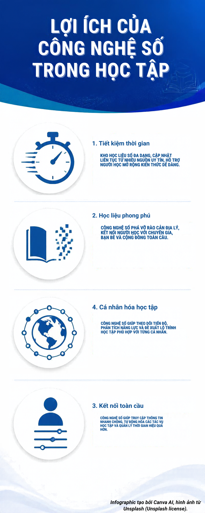

Học phần: CT005 – Nền tảng Công nghệ số | Trường Công nghệ Thông tin & Truyền thông – ĐH Cần Thơ
Infographic được thiết kế với sự hỗ trợ của Canva AI (Magic Design), tông màu xanh dương – trắng, thể hiện 4 lợi ích trọng tâm của công nghệ số trong học tập.

• Công cụ thiết kế: Canva AI (Magic Design).
• Ghi chú bản quyền: Infographic tạo bởi Canva AI, hình ảnh từ Unsplash (Unsplash license).
Video ngắn giới thiệu lợi ích công nghệ số trong giáo dục, thời lượng ~30 giây, định dạng chuẩn dưới 50MB.
file:///), YouTube có thể hiển thị cảnh báo chặn bảo mật trình phát (Lỗi 153). Bạn có thể bấm nút "Mở xem trực tiếp trên YouTube" hoặc bấm "Đổi sang Trình phát Video Offline" để xem mượt mà!
• Công cụ dựng video: CapCut Video Editor.
• Ghi chú bản quyền: Video tạo bởi CapCut, tài liệu từ Pexels/FreeSound (CC0).